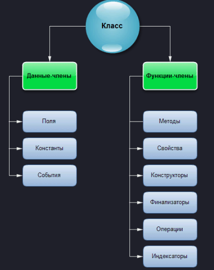

Класс представляет собой шаблон, по которому определяется форма объекта. В нем указываются данные и код, который будет оперировать этими данными. В C# используется спецификация класса для построения объектов, которые являются экземплярами класса. Следовательно, класс, по существу, представляет собой ряд схематических описаний способа построения объекта. При этом очень важно подчеркнуть, что класс является логической абстракцией. Физическое представление класса появится в оперативной памяти лишь после того, как будет создан объект этого класса.
Классы и структуры — это, по сути, шаблоны, по которым можно создавать объекты. Каждый объект содержит данные и методы, манипулирующие этими данными.
Общая форма определения класса
При определении класса объявляются данные, которые он содержит, а также код, оперирующий этими данными. Если самые простые классы могут содержать только код или только данные, то большинство настоящих классов содержит и то и другое.
Вообще говоря, данные содержатся в членах данных, определяемых классом, а код — в функциях-членах. Следует сразу же подчеркнуть, что в C# предусмотрено несколько разновидностей членов данных и функций-членов:

рис 1. Структура классов в C#
Данные-члены
Данные-члены — это те члены, которые содержат данные класса — поля, константы, события. Данные-члены могут быть статическими (static). Член класса является членом экземпляра, если только он не объявлен явно как static. Давайте рассмотрим виды этих данных:
Поля (field)
Это любые переменные, ассоциированные с классом.
Константы
Константы могут быть ассоциированы с классом тем же способом, что и переменные. Константа объявляется с помощью ключевого слова const. Если она объявлена как public, то в этом случае становится доступной извне класса.
События
Это члены класса, позволяющие объекту уведомлять вызывающий код о том, что случилось нечто достойное упоминания, например, изменение свойства класса либо некоторое взаимодействие с пользователем. Клиент может иметь код, известный как обработчик событий, реагирующий на них.
Функции-члены
Функции-члены — это члены, которые обеспечивают некоторую функциональность для манипулирования данными класса. Они включают методы, свойства, конструкторы, финализаторы, операции и индексаторы:
Методы (method)
Это функции, ассоциированные с определенным классом. Как и данные-члены, по умолчанию они являются членами экземпляра. Они могут быть объявлены статическими с помощью модификатора static.
Свойства (property)
Это наборы функций, которые могут быть доступны клиенту таким же способом, как общедоступные поля класса. В C# предусмотрен специальный синтаксис для реализации чтения и записи свойств для классов, поэтому писать собственные методы с именами, начинающимися на Set и Get, не понадобится. Поскольку не существует какого-то отдельного синтаксиса для свойств, который отличал бы их от нормальных функций, создается иллюзия объектов как реальных сущностей, предоставляемых клиентскому коду.
Конструкторы (constructor)
Это специальные функции, вызываемые автоматически при инициализации объекта. Их имена совпадают с именами классов, которым они принадлежат, и они не имеют типа возврата. Конструкторы полезны для инициализации полей класса.
Финализаторы (finalizer)
Вызываются, когда среда CLR определяет, что объект больше не нужен. Они имеют то же имя, что и класс, но с предшествующим символом тильды. Предсказать точно, когда будет вызван финализатор, невозможно.
Операции (operator)
Это простейшие действия вроде + или -. Когда вы складываете два целых числа, то, строго говоря, применяете операцию + к целым. Однако C# позволяет указать, как существующие операции будут работать с пользовательскими классами (так называемая перегрузка операции).
Индексаторы (indexer)
Позволяют индексировать объекты таким же способом, как массив или коллекцию.
Класс создается с помощью ключевого слова class. Ниже приведена общая форма определения простого класса, содержащая только переменные экземпляра и методы:

Обратите внимание на то, что перед каждым объявлением переменной и метода указывается доступ.
Это спецификатор доступа, например public, определяющий порядок доступа к данному члену класса. Члены класса могут быть как закрытыми (private) в пределах класса, так открытыми (public), т.е. более доступными.
Спецификатор доступа определяет тип разрешенного доступа. Указывать спецификатор доступа не обязательно, но если он отсутствует, то объявляемый член считается закрытым в пределах класса. Члены с закрытым доступом могут использоваться только другими членами их класса.
Модификаторы доступа
Модификаторы доступа определяют область видимости как
непосредственно самого класса, так и его составляющих (поля,
свойства, методы).
В C# доступны следующие модификаторы доступа:
public, private,
protected, internal, protected internal, private protected. На
текущий момент нас будут интересовать public и private, с
остальными разберемся в одном из следующих уроков.
Модификатор public:
◾для класса: указывает на то, что класс доступен снаружи из
сборки;
◾для составляющих класса: указывает на то, что они могут быть
доступны вне класса, к ним можно получить доступ из любого места
в программе.
Модификатор private:
◾для класса: указывает на то, что класс доступен только внутри
сборки.
◾для составляющих класса: указывает на то, что они доступны
только внутри класса.
Если модификатор не указан, то будет использован private.
Давайте разберем пример создания класса, описывающего характеристики пользователя:

В данном примере определяется новый пользовательский класс UserInfo, который содержит 4 поля и 1 метод, которые являются открытыми (т.е. содержат модификатор доступа public). В методе Main() создаются два экземпляра этого класса: myInfo и myGirlFriendInfo. Затем инициализируются поля данных экземпляров и вызывается метод writeInConsoleInfo().
Прежде чем двигаться дальше, рассмотрим следующий основополагающий принцип: у каждого объекта имеются свои копии переменных экземпляра, определенных в его классе. Следовательно, содержимое переменных в одном объекте может отличаться от их содержимого в другом объекте. Между обоими объектами не существует никакой связи, за исключением того факта, что они являются объектами одного и того же типа. Так, если имеются два объекта типа UserInfo, то у каждого из них своя копия переменных Name, Family, Age и Adress, а их содержимое в обоих объектах может отличаться: